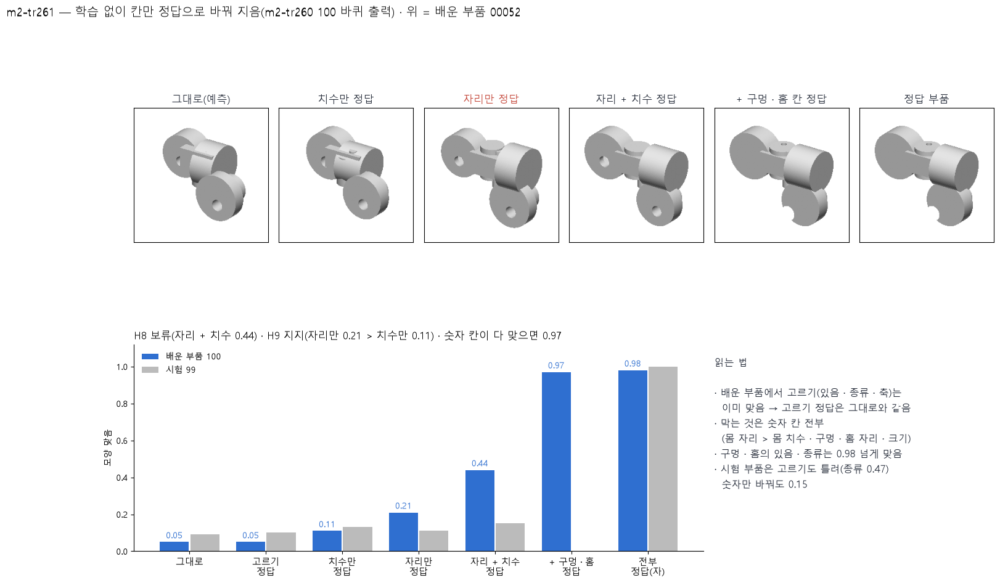

실험 m2_tr0261_h008_정답대입
목표 G1.2 view 모음 → 파츠별 CAD code(CadQuery · 그 전 「3 면도 → 파츠별 CAD」 · 지금 M2 는 위 · 앞 · 옆 고정 세 장만 받음 → 아무 각도 N 장으로 바꿀 것 · 11-20) · G1 첫 제품 — 피규어 · 메카 사진 여러 장 + 치수 → 숨은선 3 면도 + 파츠별 CAD · G0 임의의 이미지 → CAD 코드 · 빌린 가정 4: 생성기기하 · 정답3D · 시점앎 · 정사영 · 갚는 계획: 학습 없는 진단 — m2 출력 꼴을 정하는 데만 씀 · 갚는 계획은 m2-tr260 과 같음 · 목표 시험지 값: 안 잼 (!)
m2 출력에서 숫자 칸(자리 · 치수)만 정답으로 바꿔 지으면 모양 맞음이 오르나 — 모양 맞음을 막는 것이 자리인가 치수인가?
판정 · H8 보류(자리 + 치수 정답 0.44 · 선 0.50) · H9 지지(자리만 0.21 > 치수만 0.11 · +0.10 [0.03, 0.17]) — 배운 부품에서 고르기(몸 · 종류 · 축 · 구멍 · 홈 종류)는 다 맞고, 숫자 칸(몸 자리 · 몸 치수 · 구멍 · 홈 자리 · 크기)을 다 정답으로 하면 0.97 — 모양 맞음을 막는 것은 숫자 칸 전부 · 그 가운데 몸 자리가 가장 큼 · 시험은 고르기도 틀림(종류 0.47 · 구멍 · 홈 있음 0.49) · 다음 = 숫자를 고르기로 바꿔 내기(자리 = 붙임 · 치수 · 구멍 자리 = 구간 고르기) 또는 숫자 읽는 꼴
| 가설 | 주장 | 결과 | 근거 |
|---|---|---|---|
| H8 | 모양 맞음을 막는 것은 숫자(자리 · 치수)다 — 숫자만 정답이면 배운 부품 대부분이 맞는다 | 보류 | 그대로 0.05 · 자 검사 정답 판 학습 0.98 · 시험 1.00 · 재현 그대로 = tr260(0.05 · 0.09) · 판정 뒤 추가: 숫자 + 구멍 · 홈 칸까지 정답 0.97(거리 중앙 0.008) — 구멍 · 홈 칸 있음 0.996 · 종류 0.98 은 맞고 자리 오차 0.12(범위 ±0.4) · 크기 20 % 가 틀림 |
| H9 | 자리가 치수보다 모양 맞음을 더 막는다 | 지지 | 자리만 0.21(거리 중앙 0.068) · 치수만 0.11(0.119) · 그대로 0.05(0.130) · 시험은 자리만 0.11 · 치수만 0.13 · 숫자 둘 0.15 · 고르기 0.10 — 시험은 고르기도 틀려(종류 0.47) 하나만 바꿔서는 안 갈림 |
분석
한 줄로
물음: m2 가 배운 부품도 못 맞히는 것은 무엇 때문인가 — 몸의 자리인가, 치수인가, 다른 칸인가?
답: 숫자 칸 전부다. 배운 부품에서 고르기(몸 수 · 종류 · 축 · 구멍 · 홈 종류)는 이미 다 맞는다. 몸의 자리와 치수를 정답으로 바꾸면 모양 맞음이 0.05 → 0.44, 구멍 · 홈의 자리 · 크기까지 바꾸면 0.97 이다. 숫자 가운데는 몸의 자리가 가장 크게 막는다(자리만 0.21 > 치수만 0.11 · H9 지지). H8 은 0.44 로 지지선 0.50 아래라 보류.
왜 이 실험을 했나
m2-tr258 ~ 260 에서 view 꼴 · 배우는 양 · 칸마다 광선 어느 것도 숫자를 못 올렸다. 3면도를 넣던 tr182 도 숫자가 나빴다. 다음 판을 고르기 전에, 학습 없이 어느 칸을 고쳐야 모양이 맞는지부터 갈랐다(사용자 원칙: 원인 가설 → 싼 검증 먼저).
바꾼 것 하나
학습은 없다. m2-tr260 100 바퀴 무게의 같은 출력에서 칸만 정답으로 바꿔 CAD 를 지었다: 그대로 · 고르기 · 치수만 · 자리만 · 자리 + 치수 · 정답. 칸 짝은 학습 손실과 같은 부피 순이고, 숫자는 정답 · 예측 둘 다 몸이 있는 칸만 바꿨다. 채점은 tr260 과 같다(배운 부품 100 · 시험 99).
결과

| 배운 부품 100 | 모양 맞음 | 표면 거리 가운데 |
|---|---|---|
| 그대로 | 0.05 | 0.130 |
| 고르기 정답 | 0.05 | 0.130 |
| 치수만 정답 | 0.11 | 0.119 |
| 자리만 정답 | 0.21 | 0.068 |
| 자리 + 치수 정답 (H8) | 0.44 [0.34, 0.54] | 0.052 |
| + 구멍 · 홈 칸 정답 | 0.97 | 0.008 |
| 전부 정답(자 검사) | 0.98 | 0.008 |
H9(자리만 − 치수만)는 +0.10 [0.03, 0.17] 로 지지다. 자 검사(정답 판 0.98 · 1.00)와 재현(그대로 판 = tr260 의 0.05 · 0.09)은 둘 다 통과했다.
왜 이렇게 나왔나
확인한 것
- 배운 부품의 구멍 · 홈 칸은 있음 0.996 · 종류 0.98 로 맞는다. 틀리는 것은 숫자다. 자리 오차 가운데 0.12(범위 ±0.4) · 크기 오차 20 %.
- 그림의 부품에서 「자리 + 치수」 판은 아래 몸의 홈이 둥근 구멍처럼 보인다. 홈의 자리가 면 가장자리에서 안쪽으로 밀린 것으로 보인다. 구멍 · 홈 칸까지 정답이면 정답 부품과 같아진다.
- 시험 부품은 고르기도 틀린다(몸 종류 0.47 · 구멍 · 홈 있음 0.49). 그래서 한 칸만 바꿔서는 0.10 ~ 0.15 에 머물러 갈리지 않는다.
짐작 (아직 확인 안 함)
- 망은 고르기는 외우는데 연속 숫자 회귀는 못 한다. 숫자를 고르기 꼴로 바꿔 내면 배울 수 있다 — 몸 자리 = 붙임(어느 몸 · 어느 면), 치수 · 구멍 자리 = 구간 고르기.
한계
- 학습 없는 진단 · 한 무게(m2-tr260 100 바퀴) · 정답 view · 생성기 부품.
- 「+ 구멍 · 홈 칸」 은 판정을 정한 뒤 추가로 쟀다(판정에는 안 씀). 처음 시도는 제 실수(표준 입력 스크립트로 병렬 짓기가 전부 실패)로 0 이 기록되어 지우고 스크립트 함수로 다시 쟀다.
배운 것과 다음
배운 부품에서 m2 를 막는 것은 숫자 칸 전부다. 고르기는 이미 다 배운다. 숫자 가운데 몸의 자리가 가장 크다.
- 몸 자리를 붙임(어느 몸 · 어느 면 고르기)으로 내는 판 — 생성기 자리는 붙임 + 크기로 정해지므로 정보가 같다.
- 치수 · 구멍 자리 · 크기를 구간 고르기(여러 칸 중 하나 + 칸 안 작은 보정)로 내는 판.
- 시험 부품은 고르기도 틀리므로, 숫자를 고친 뒤 시험 일반화는 따로 본다.
실험 기록
- 카드 · 대입261.py(흐름 · 잼 · 재기 · 특징 · 그림) · 잼.json · 흐름.png · 결과.png · 원본 out/설명/캐드부품/모델261/잼.json